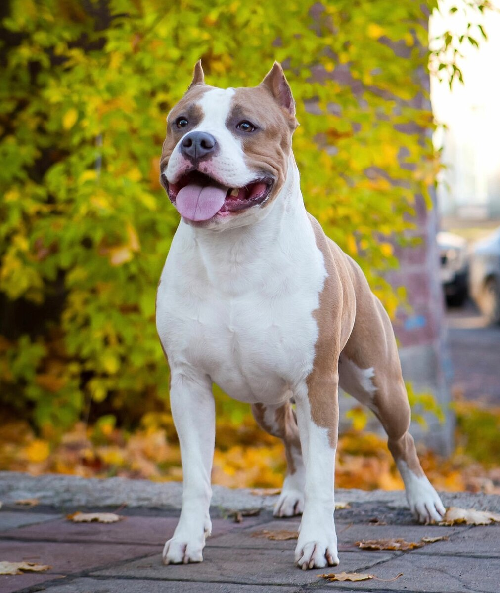

Американский стаффордширский терьер

Оценка породы:
Ум
Линька
Популярность
Охранные качества
Игровая активность
Сторожевые качества
Дружелюбность к детям
Склонность к дрессировке
Характеристика породы
Краткое описание
Условия содержания:
Квартира
Длина шерсти:
Короткая
Размер взрослой собаки:
Рост в холке самцов – 46-48 см,
самок – 44-46 см
вес самцов-35-40 кг, самок-25-32 кг.
самок – 44-46 см
вес самцов-35-40 кг, самок-25-32 кг.
Средняя продолжительность жизни:
12-15 лет
Выгул:
2-4 раза в день
Потребность в физической нагрузке:
Средняя (прогулки от 1,5 до 3 часов в день)
Стоимость щенка:
10000-100000 руб. (в зависимости от класса)
Фото взрослой собаки

Стоимость щенков
Пет-класс – 12 000 - 18 000 руб.
Брид-класс – 18 000 - 25 000 руб.
Шоу-класс – 25 000 - 35 000 руб.
Особенности характера и поведения
Селекционерам удалось искоренить агрессивность породы. Современным амстаффам не свойственна свирепость.
Собакам этой породы присущи особенности:
Внимательность (замечают в каком настроении хозяин);
Общительность – любят быть в обществе взрослых людей, детей;
Спокойствие и уравновешенность;
Любовь к активным играм и энергичность;
Интеллектуальность;
Храбрость, выносливость, верность и интерес к жизни – это главные черты этой породы.
Американский стаффордширский терьер является гибкой породой, характер ее представителей зависит от действий и требовательности владельца. Людям со слабым характером такая собака не подойдет. Пес может оказаться характерным и не станет воспринимать хозяина без твердой позиции. Питомец будет выполнять команды человека стойкого, сильного и терпеливого.
Стафтерьеры любят детей. Такие псы с радостью отправятся на велосипедную прогулку, пробежку. Дефицит человеческого внимания для них губителен.
Достоинства
К преимуществам породы можно отнести:
Разум и смышленость – воспитывать их занимательно;
Смелость;
Легкость в уходе;
Мускулистое телосложение;
Отсутствие неприятного запаха;
Дружелюбность;
Трудолюбие и выносливость;
Довольно послушный;
Сыскные способности;
Лает только когда на то есть реальная причина.
Амстаффы не нападают на людей. От рождения они не умеют охранять, их нужно обучить этому. Представители породы наделены необыкновенными возможностями видеть угрозу. Способны сторожить дом, имущество, работать сыщиками, могут отыскивать давние следы крови.
Недостатки
Среди недостатков породы можно выделить:
Имеют твердый характер, не подойдут людям с нестабильной психикой;
Безоговорочное послушание в некоторых случаях может нести опасность, так как пес не отличает хорошее поведение от плохого и выполняет все команды;
Проявленное чувство своей значимости– животное с самого начала должно знать свою роль.
Уход и содержание
Шерсть у собак короткая, не нуждается в особом уходе. Достаточно время от времени вычесывать питомца жесткой щеткой и мыть по мере загрязнения. Чтобы шерсть блестела можно изредка протирать ее замшевой тряпочкой.
Мыть амстаффа нужно не чаще чем раз в 2 месяца собачьим шампунем либо мылом. После мытья необходимо тщательно вытереть шерсть мягким полотенцем.
В холодное время года можно не мыть пса, достаточно изредка обсыпать его снегом и затем вычесывать жесткой расческой. После шерсть хорошо вытирается.
Уши нужно чистить по мере загрязнения ватным диском, смоченным в кипяченой воде или антисептике. Глаза также необходимо протирать ватным диском.
Обязателен уход за анальными железами. Излишек секрета в них может спровоцировать воспаление. Чистку сделать может ветеринар или сам хозяин. Чтобы ее сделать правильно, нужно посмотреть, как эта процедура выполняется специалистом.
Амстаффу нужны постоянные физические нагрузки. Они важны и для хорошей формы и для психологического состояния. Когда пес гуляет в людных местах, он учится контактировать с незнакомцами (людьми и собратьями).
Питание
Представители породы непривередливы в питании, но имеют свои вкусовые предпочтения:
Псам нравятся потроха, но их нужно хорошо отваривать, заранее разрезав не мелкие куски.
Кормить можно печенкой, бараниной, телятиной, курицей.
Для поддержания формы псу необходимо давать вареную рыбу, очищенную от костей и тщательно тушеную для мягкости.
Взрослую собаку необходимо кормить 2 раза в день.
Взрослую собаку необходимо кормить 2 раза в день.
Здоровье
Здоровый амстафф энергичен, у него влажный нос, чистые глаза и хороший аппетит.
У животного нет отталкивающего запаха, кишечник и мочевой пузырь систематически опорожняются.
Заболевшая собака плохо питается, не играется, отказывается гулять. Безосновательные перемены в поведении пса – основание обратиться к ветеринару.
Американские стаффордширские терьеры склонны к таким болезням:
дисплазия тазобедренного сустава;
артрозы;
артриты;
вздутие живота;
ожирение;
атрофия сетчатки;
заворот века;
катаракта;
гиперпластичность стекловидного тела;
кожная гистиоцитома;
солнечный дерматит;
тучноклеточная опухоль;
рак кожи.
Выгул
Собаке этой породы нужны энергичные и регулярные прогулки. Важно гулять с псом 1,5-3 часа каждый день, играть с ним, бросать палку либо мяч.
Спортсменам такая собака идеально подойдет. Она с удовольствием будет бежать за хозяином.
Стаффордам нравится драться. Собака не будет кидаться на всех, но может не стерпеть слишком назойливых собратьев. Его нужно обучить правильно решать конфликты, чтобы не возникало драк с другими псами. В людных местах на питомца нужно надевать шлейку.
Стаффордширский терьер и питбуль отличия
Эти породы имеют много сходств. Обе были выведены для боев, поэтому имеют похожий темперамент. Но есть моменты, в которых они разные.
Две породы собак – стаффордширский терьер и питбуль имеют такие отличия:
Внешние данные. Амстаффы крупнее. Питбули могут иметь любой окрас, в отличие от первых. У стаффорда грудь шире и крупнее.
Характер. Обе породы поддаются дрессировке, но считается, что стаффорды более интеллектуальны. Питбули бывают неуправляемыми, гулять с ними лучше на поводке. Амстаффы более послушны.
Видео о породе